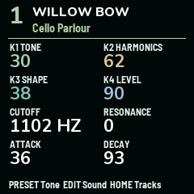
Sound with a softer edge.
Warm pads, rounded basses and strings. Explore 664 Tones and 300 factory entries including Blank. Choose any voice for any track.
Play the 2.4 Web StudioM-VAVE FM-1 Version 2.4 · More room to dream
Six voices. 299 musical Biomes, plus Blank. Twelve warm new Tones, eleven additional Dreams, moving grains and friendlier controls. Real audio work on both cores, with more room to explore.
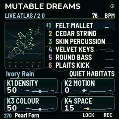
2.4 / More room to dream
12 new Tones, 20 new Biomes and 11 additional Dreams. Six freely assignable tracks and all 24 models, with real audio work on both processor cores.

Warm pads, rounded basses and strings. Explore 664 Tones and 300 factory entries including Blank. Choose any voice for any track.
Play the 2.4 Web Studio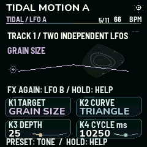
Both LFOs can move Grain Size and Position. New grains follow the modulation while existing grains keep their shape.
Explore the 2.4 recipes
Menu navigation in both directions, help on every long hold, stopped panel recall with MIDI settings retained, optional AIR, Chorus, Width and Vintage.
Read the complete changesQualified application 8FBE5AF8. 22,836 bytes free SRAM including the mandatory reserve. The final memory step recovered 8,016 bytes versus intermediate build AEC27818. Read the release notes for the measured scope and chip limits.
With special thanks to Sarmiento (Funkelectric), Yimiblú, our Screen Reader testers and all the people helping this garden grow.
The 2.4 feature film
Eight minutes, actual FM-1 music and display, English Noah narration and DE/EN subtitles. Long passages leave room for the music.
Watch the full film on YouTube · YouTube Short · Instagram Reel · TikTok
58-second Short · 30-second musical Reel · Complete manual · Alle Änderungen seit 2.3 (Deutsch)
2.3 / Bloom Studies
New sounds, music-following details and more useful feedback. Every existing Biome and Tone keeps its place.
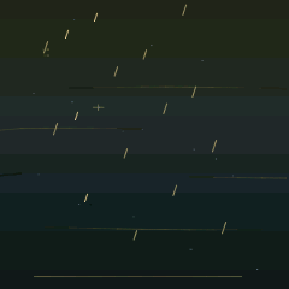
In Terra Pluvia, six track positions and six kinds of rings respond to real notes. Aurora Polaris pairs the six tracks into three ribbons, with curtains of light at each note. The drifting rain and stars stay ambient.
Play a dream →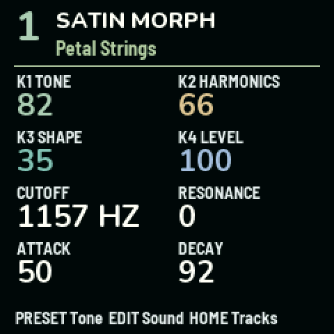
Twelve Tones explore Satin, Silk, Choir, Bowed, Aero and Mellow. Choose any of them on any track. Your notes, rhythm, mixer and effects stay in your hands.
Hear the 652-Tone library →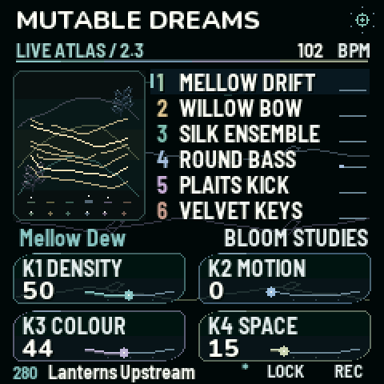
Petals After Rain · Willow Waltz · Blue Hour Bloom · Lanterns Upstream. Four separate six-track pieces, from 46 to 102 BPM, with different harmonies, phrases and gentle pulses.
Find BLOOM STUDIES in the Atlas →Living meters now fall with elapsed time, so slower screen updates do not make their held peaks linger longer. The original shapes, colours and motion-off option remain.
More knob, track, page, Freeze, octave and MIDI-channel changes are announced. Automated checks and real-device load tests passed; feedback from Screen Reader users is still welcome.
With an external clock selected, pressing PLAY again renews the two-second waiting period for a late clock. It never silently switches to internal tempo. Itinera still uses its internal clock.
New Tones use existing sound models and effects. This update does not add Shimmer or use a second processor core. In saved projects, a newly added factory sound can appear as “User” for compatibility while its sound settings remain intact.
Newer FM-1s with the UC25HQ80 flash chip are now verified in emulation — boot, save and reboot-persistence pass on both flash parts. Test yours with fm1-chiptest.
Read all 2.3 changes →Already in 2.2 / Kept in 2.3
Familiar Biomes and six freely assignable tracks. New ways to find a sound, shape a part and keep the music moving.
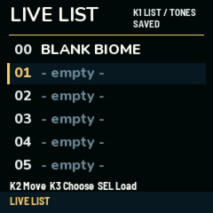
Arrange 16 references to your User and factory Biomes. Blank stays at row 00. Browse Tones by name and star your favourites, right on HOME.
Learn the Live List →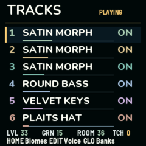
Level, grain, room and Touch on HOME. Open Voice Detail for a clear view of the selected sound. Return to the menu page you last used.
Explore the performance views →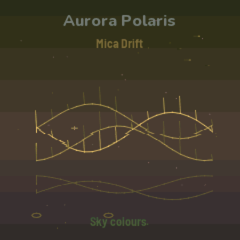
The 14 Itinera journeys gain live Density, Motion, Colour and Space offsets. Keep the current Biome playing with SEL, or return to your earlier project with ENV.
Begin a dream in the browser →Load now, wait for the next bar or bring tracks across one by one. KEEP SETTING carries your harmony and tempo into the next Biome.
Four new Satin-Morph Biomes and eight Tones explore soft saw colours. All previous factory Biomes remain available.
Send generated monophonic synth notes over USB on per-track MIDI channels. Record the stereo mix and six mono voices over USB audio.
Live List stores references, not a copy of your edits. Save custom Biomes to User Banks first. USB note output covers generated synth notes; kit, incoming notes, clock output and BLE/TRS output are not included.
Read all 2.2 changes →A clear place to begin
You can learn without an FM-1. Start small, then use the full reference whenever you need it.
Twenty-five self-playing Dreams for the FM-1. Choose a four-character Dream code, or build MY DREAM from at least four playable starred Biomes. Let shared motifs and harmonies move across the transitions.
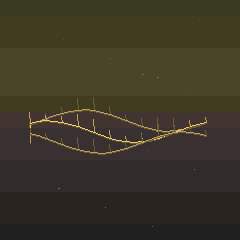
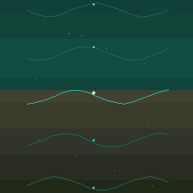
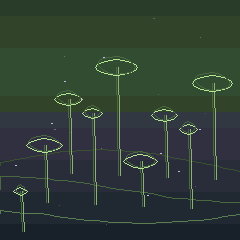
Interactive walkthrough
Pick a step to see the screen and follow along on the FM-1 or in the browser.
Download the illustrated 2.4 guide (PDF) → · Troubleshooting →
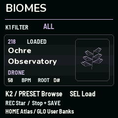
A Biome holds the sounds, patterns, effects and modulation for the whole instrument.

Two tracks with different pattern lengths can fall in and out of sync as they play.
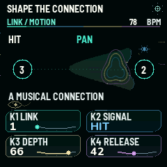
Use Living Links to let a hit move another voice. Biome Drift moves between two captured settings.
For hands-on control, MIDI Learn maps a knob or fader to a target. See the MIDI Learn walkthrough in the PDF for a first mapping.
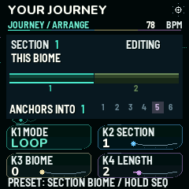
Journey joins up to eight sections. An anchored voice can carry its sound and pattern across a transition.
The other 277 factory Biomes, including Blank, start with Journey Off. Off retains the sections.
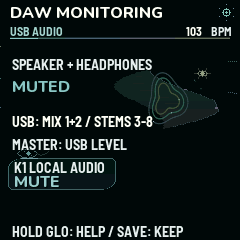
Connect the FM-1 by USB and choose it as your audio input at 44.1 kHz.
Three factory Journeys
Rendered from the 2.0 engine. Each clip includes a complete loop and its return.
A low bass connects a vowel choir, cello and felt.
Felt and cedar give way to hand percussion over the same bass motif.
Kick and sub hold a dub groove as the upper voices change.
2.3 / Original FM-1 sound & display
A calm 7:48 tour: selected new Tones, all four Bloom Studies, existing delay and reverb, and music-following Terra Pluvia and Aurora Polaris. Original FM-1 USB sound, a new gentle English narration and English/German subtitles. The closing tour includes VIBE FM, MPC, handheld and SMK projects, TrackWerk, bazillOS, radio and visual live streams.
Watch the full 2.3 film on YouTube → · Watch the 58-second showreel → · Keep the illustrated quickstart →
Archive / 2.2 feature tour
A full tour of the new performance views, dark Biomes and hands-on Itinera dreams. No voice-over: just the instrument, with readable captions.
Mutable Dreams 2.1
Hear Silva Nocturna, Mare Nebularum and Terra Pluvia with the original device display and USB audio.
Watch on YouTube → Watch the Short → Follow Mutable Dreams on Instagram →VIBE FM · 0.32 Preview
A garden you can play. Explore 271 Biomes with 16 expressive pads, loop your gestures and shape six generative tracks on a full-size Stage. New in 0.32: seven animated page families, page-turn blooms, garden lighting and living macro plants.
Play in your browser. Download the WASM file and drop it into The Firmware Hub’s VIBE FM Playground. Then press PLAY.
Play in your DAW. Install Sven Trogus’s VIBE FM host from The Firmware Hub. Open the plug-in and choose Add firmware to load the Performance Garden ZIP. Desktop AU and VST3, save/load and automation were tested. anyDAW 0.3.61 with VIBE 0.8.0 needs the documented private host patch. Physical VIBE hardware testing remains pending.
Illustrated guide · all 50 pages · Source and release files · VIBE FM Lab
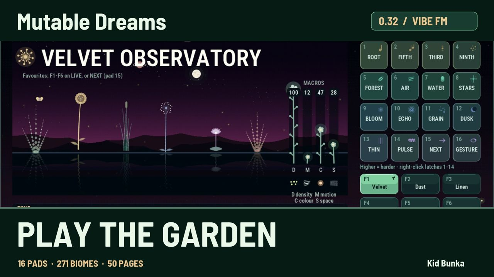
New full tour · 18 November, 10:00 CET. Original instrument sound, no narration, and a tour of all 50 pages.
Cardputer ADV / Development preview
Mutable Dreams Field brings recorded sound, gentle rhythms and evolving melodies to the white M5Stack Cardputer ADV. Turn a voice, a small field recording or a drum break into a musical texture.
Watch the full English tour · 3:58 · 45-second musical preview
FIELD records and shapes a short source. DREAM grows melodies. BEAT and Slice Studio reveal rhythm. TRACK arranges harmony. CONDUCT shapes the shared effects and MIDI. SCRIPT combines seven musical recipes with a small language for notes, rhythm and track controls.
20 synthesis engines, 78 sound presets, 25 Biome choices including Blank, 18 texture recipes and 22 master-effect characters. The English Companion 0.13 offers waveform and cut editing, personal kits, ambient arcs, separate Melody/Rhythm variations, Wavetide controls, USB take recording and musical commands. Thirty interactive lessons follow actual actions on the instrument.
Move through a source with Scan, Depth and Spray. Freeze a moment, reverse it, slice it, or place it inside the shared reverb and Shimmer space. Keep drums subtle, or let a break guide the piece.
Six freely assignable tracks share up to eight real-time voices. Wavetide projects share five; Space, Shimmer and Deep share three. Up to three held notes per track use that same pool. One short sample source lives in RAM: two seconds at 16 kHz or four at 8 kHz.
Capture a short world from the built-in microphone or USB audio. Mac input now records while the live display is streaming. Preview the shared take, assign it to Grain, shape it with Drift, Scatter, Bloom or Stillness, and save the source-bound arrangement to SD.
Browse personal WAV folders, assemble short hits into a kit, name and level its slices, and place slices in patterns. Eight named kit slots keep immutable SD revisions; protected parts keep their edits.
Keep six tracks, try a gentle mutation and return to the free parts. Ambient arcs evolve through Arrival, Bloom, Drift and Rest on the musical clock. Locks and guards stay in control.
Retune free synth notes while keeping their rests, or change the rhythm while keeping existing pitches. Choose a strength, all six tracks or one track, and an explicit seed. Keep, Undo and Return make exploration reversible.
Try eight synthetic signal scenes as quiet FM bells. Simulated strength and quality shape Grain Scan, Depth and Spray. Copy the last accepted values to a recorded texture, compare with Undo and save the project. RF stays off; real radio reception comes later.
Explore four spectral frames with Position, slow Motion and Color. Tidal Conservatory offers four new wave sounds, a gentle bass and a quiet FM bell. Native and Companion tide graphics follow the settings. Sixteen personal sound slots keep your favourites.
Write a short command to change tempo, scale or a free track, or dream a melody or rhythm with a chosen seed. A compact or larger editor keeps the cursor visible on the instrument. Keep favourite commands in 16 SD slots with version history; read and load them as drafts before applying. Companion offers the same words with larger controls. Undo compares musical changes.
Private development build 0.0.40-dev · 25 November 2026. Musical commands, the native text editor and versioned SD commands are installed and checked with the English Companion 0.13. Applying a command, Undo, saving words and loading a draft have been checked on the identified Cardputer ADV. Short combined checks covered three MIDI notes with SD recording and live display images, plus Mac USB capture during live display transfer. These digital checks do not replace final listening, physical keyboard or flicker acceptance, which remain open. This tour shows an earlier build. A public Cardputer firmware download will follow its own release announcement. Signal Seeds uses local examples; real radio reception is still planned. USB MIDI connects through a host; Local Dream Radio generates music.
Next: independent drum and field-texture sources, richer sound and effect transitions, longer-source investigations, a browser and handheld editor, iPhone audio, direct USB hosting, BLE Central and measured LoRa reception. Compatibility still needs validation. Local synthetic Signal Seeds are playable now. Actual LoRa packet data may later seed music; general radio voices need an additional compatible audio receiver before they can feed the sampler.
dream melody 25 all seed 2026. Apply changes the music; loading a saved command only fills the editor. Use Undo to compare.The desktop Companion edits a connected local Cardputer and displays the actual capture progress. It asks again before replacing the shared source. A sharper browser editor and handheld links remain development goals. One shared sample buffer and the actual voice budget define the current instrument.
Original soundtrack: Lanterns Beyond the Moss by Kid Bunka, made on the Cardputer and recorded to SD. Edited genuine display captures are embedded in a photo-derived device visualization. Synthetic English narration.
MPC / PRODUCT PREVIEW
Six generative tracks. 271 Biomes. 48 Worlds. Play the keys, shape the space with performance pads and capture a Gesture.
Gen 2 target. Tested and approved on our Gen 2 MPC; older-model compatibility is still being investigated.

Firmware & tools
Mutable Dreams 2.4 · FM-1 · tested build 8FBE5AF8
Exact build 8FBE5AF8 passed the scoped 2.4 qualification on one Puya-chip FM-1: 24 models, 96 Elements cases, USB8 isolation, Handover, Grain LFOs, controls and a natural full 30-minute Dream. Highest observed callback 4,672 / 5,804 microseconds. Original data and settings restored. Physical UC25HQ80 qualification, a fresh power-disconnected cold start and untested update routes remain outside this claim. Historical 2.3 tests remain historical.
Before an update, export your saved banks as .mddb and export an edited live Biome separately. Use desktop Chrome or Edge for the USB installer and editor.
On the workbench
The same musical curiosity is growing into other instruments. FM-1 2.4 and the handheld edition 1.5.9 are available now. Each edition has its own downloads, version numbers and compatibility notes.
Botanical track views and a pad-led garden. Explore the 0.9.13 preview and illustrated guide.
Six tracks, 272 Biomes, 96 worlds and a hands-on Sound Lab. Packages for Trimui Brick (Knulli), Miyoo Mini / Mini Plus / Mini Flip (Onion OS), Powkiddy RGB20S (AmberELEC), Android and Linux.
Explore the handheld edition · Deutsch · Downloads and illustrated manuals
H700 is a community test and has not been run on a real H700. Mini Flip USB-C audio remains unverified. Linux packages welcome feedback.
A separate port for the SMK-37 Elite. The Pro will follow with its own hardware tests and installer.
Independent instruments / Community support
Mutable Dreams is free to explore. Voluntary donations go entirely into firmware updates, new firmware and synthesizer-software projects. Thank you for helping us keep developing.